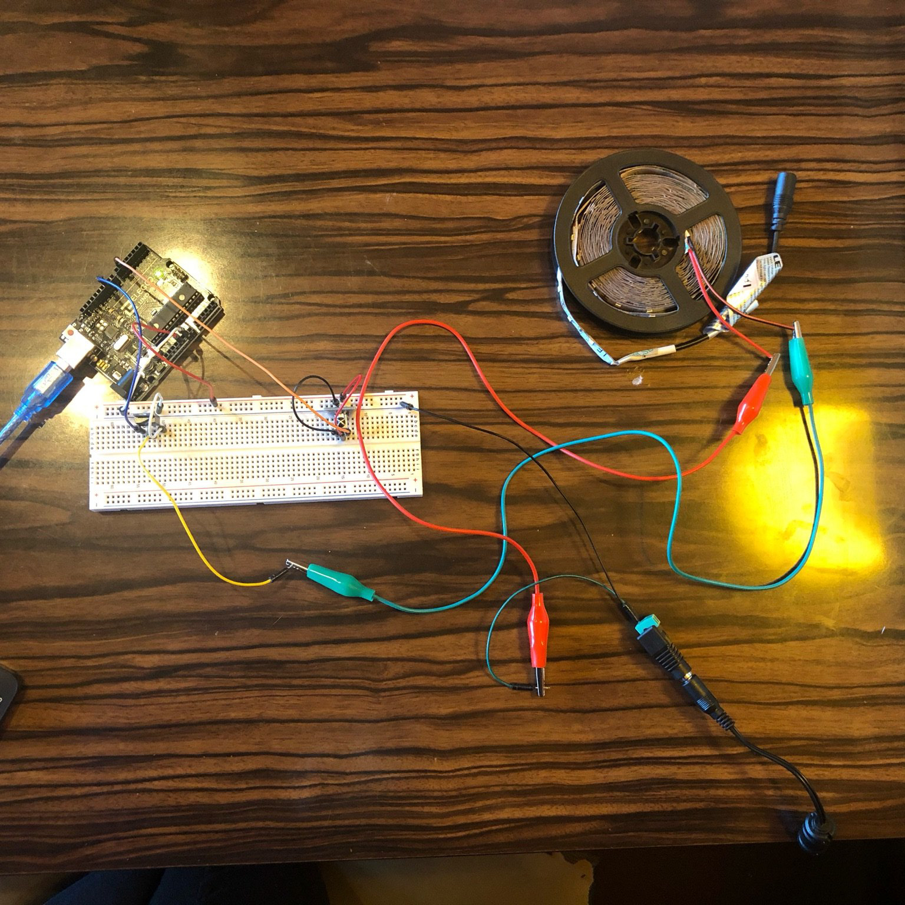
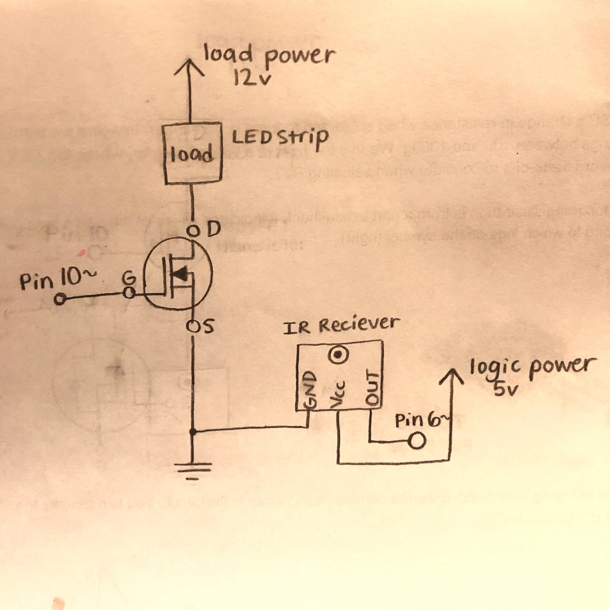

The IR receiver: The G pin (GND) is connected to ground thru the breadboard, the R pin (Vcc) is connected to analog pin 6, and the Y pin (S) is connected to the logic power source
(Arduino 5v) via the breadboard.
The LED strip: The red wire is connected via alligator clips to the positive end of the load power (12v external power source). The negative end of the load power is connected
to ground thru the breadboard. The black wire on the LED strip is connected via alligator clips to the D pin of the transistor (load source).
The transistor: The G pin (logic source) is connected to analog pin 10, the pin being used to control the LED strip in the code. The D pin (load source) is, as mentioned before,
connected to the black wire of the LED strip via alligator clips. The S pin (GND) is connected to ground through the breadboard.
For ease in my wiring, I connected the Arduino 5v (logic power) to the horizontal power (+) row on my breadboard. The IR receiver recieves its power by connecting to this row.
I connected the Arduino GND to the horizontal ground (-) row on my breadboard. The transistor, IR receiver, and external power source all connect to ground thru this row.

Here is my schematic.
Current Justification: I might be incorrect or missing something, but here's my calculations. The total current that will be drawn from my load in this circuit
(the LED strip) is approximately 1.5A, calculated through Power (P) = Voltage (V) * Current (I), with P = 18W and V = 12V. The max current that can be carried across
the transistor is 32A. So, 1.5A is a safe amount of current for the transistor to switch. The thing is, I don't how much current is drawn by the IR receiver, if any.
I was unable to find any information about this online or even find the datasheet for the particular breakout in our kit. It was unclear, but just going off of logic,
the IR receiver is not a heavy load object so it likely does not have a strong effect on the calculation.